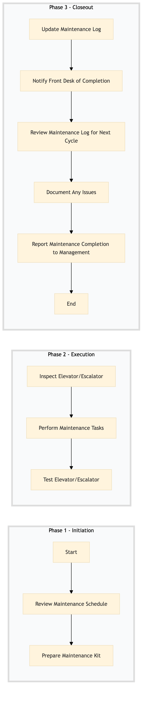

| Role | Steps |
|---|---|
| Facilities Engineer | 1.1 1.2 2.1 2.2 2.3 3.1 3.2 3.3 3.4 3.5 |
| Step | Name | Role | System | Input | Output | KPI | Dec? | Exc? | Pain Point / Risk |
|---|---|---|---|---|---|---|---|---|---|
| 1.1 | Review Maintenance Schedule | Facilities Engineer | Oracle OPERA Cloud | Maintenance schedule | Updated maintenance log | Less than 5 min | N | Y | Overlooking critical components in the maintenance checklist. |
| 1.2 | Prepare Maintenance Kit | Facilities Engineer | Birchstreet Procurement | Maintenance kit list | Prepared maintenance kit | Less than 10 min | N | Y | Incorrect or missing tools in the maintenance kit. |
| 2.1 | Inspect Elevator/Escalator | Facilities Engineer | Oracle OPERA Cloud | Maintenance checklist | Inspection report | Less than 30 min | Y | Y | Neglecting safety protocols during inspection. |
| 2.2 | Perform Maintenance Tasks | Facilities Engineer | Oracle OPERA Cloud | Inspection report | Maintenance log entry | Less than 60 min | N | Y | Inadequate training leading to improper maintenance procedures. |
| 2.3 | Test Elevator/Escalator | Facilities Engineer | Oracle OPERA Cloud | Maintenance log entry | Test report | Less than 15 min | Y | Y | Failure to thoroughly test equipment before reactivation. |
| 3.1 | Update Maintenance Log | Facilities Engineer | Oracle OPERA Cloud | Test report | Updated maintenance log | Less than 5 min | N | Y | Delayed updates to the maintenance log affecting future planning. |
| 3.2 | Notify Front Desk of Completion | Facilities Engineer | Oracle OPERA Cloud | Updated maintenance log | Notification to Front Desk | Less than 5 min | N | Y | Inconsistent communication between Facilities and Front Desk. |
| 3.3 | Review Maintenance Log for Next Cycle | Facilities Engineer | Oracle OPERA Cloud | Updated maintenance log | Maintenance schedule update | Less than 10 min | N | Y | Overlooking upcoming maintenance needs due to busy schedules. |
| 3.4 | Document Any Issues | Facilities Engineer | Oracle OPERA Cloud | Test report | Issue log entry | Less than 5 min | Y | Y | Failure to document issues leading to unresolved problems. |
| 3.5 | Report Maintenance Completion to Management | Facilities Engineer | Oracle OPERA Cloud | Maintenance schedule update | Management report | Less than 10 min | N | Y | Lack of transparency in reporting maintenance activities to management. |
This process outlines the maintenance activities for elevators and escalators at a full-service Marriott hotel to ensure safe and efficient operation.